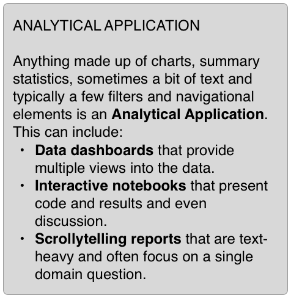
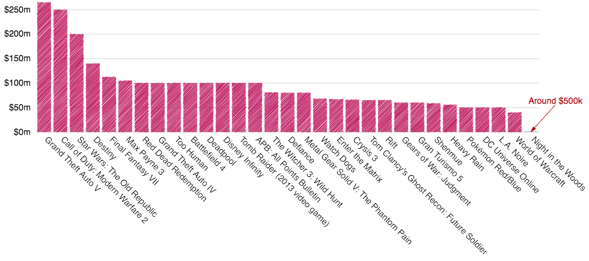
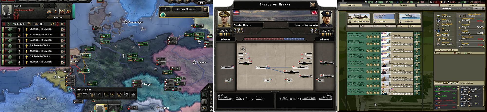
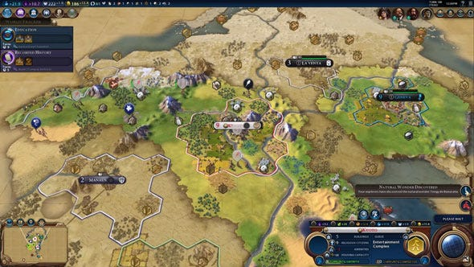
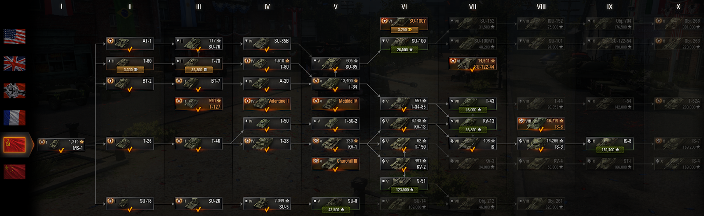
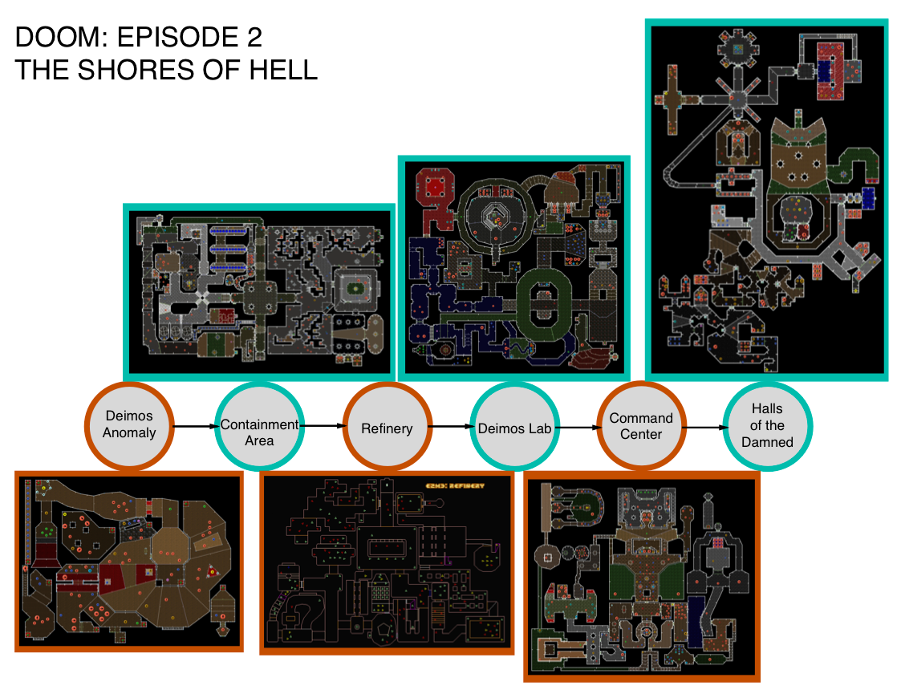
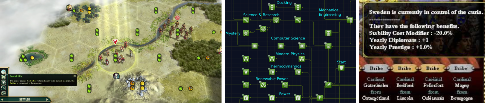
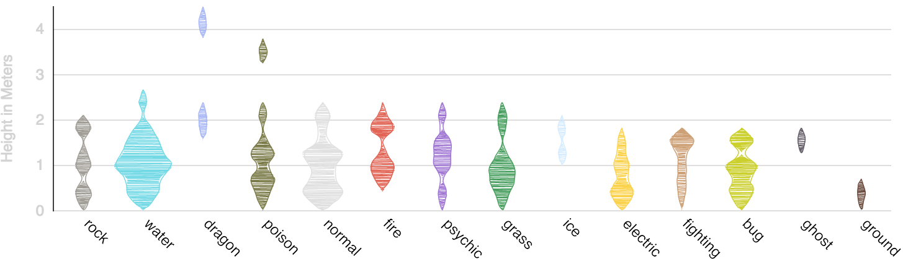

Susie Lu’s article on storytelling in explanatory data visualization hit on themes with which I’ve often wanted to engage. Her focus was on the challenges of dealing with story in the framework of dynamic datasets, and I was most intrigued by her gestures toward video games. Games can provide a useful metaphor for how to deal with some of the challenges of making effective data visualization products. But to understand how game concepts can improve data visualization, we need to better understand the structure of games and identify those kinds of games which most relate to the exploratory data visualization experience. It’s all well and good to refer obliquely to how games and data visualization seem to share many attributes, but I feel there are practical lessons and approaches that we can adopt from video games for data visualization.
What I hope to illustrate is an approach to designing analytical applications that can be informed by game design and mechanics, both from a general design perspective and with specific practical approaches. Still, I’m not describing best practices honed by years of integrating game development principles into data visualization, rather I’m presenting an aspirational guide. In this initial piece I’ll tease apart the monolithic idea of games to reveal a few simple concepts that can be directly related to data visualization. In future pieces, I hope to describe and demonstrate approaches that arise from this perspective.

#NOTALLGAMES
For most people, “video games” tends to mean vast AAA games — the most expensive, most heavily advertised games — which are often first-person shooters or variants of that genre (e.g. Skyrim or Grand Theft Auto), or low-tech games we all enjoy (to varying degrees) whenever we’re stuck with our families during the holidays (e.g. Monopoly, Uno or Risk). But these games are both too big and too small to easily identify elements to draw from.
The small games focus too much on constrained interactivity and social cues to easily adopt their mechanics (though from a graphical design perspective, one could establish of decent library of icons and shapes for data visualization based on those seen in common card and board games). The big games cost tens of millions of dollars and have huge teams and long development cycles, something we’ll never match with a data dashboard or interactive report.

Rather, I think we should look at strategy games (which are often map-based) and the interactive fiction and graphical adventure games that dominated computer gaming before GPUs and CPUs became robust enough to push enough polygons to enable the 3D immersive environments audiences have grown accustomed to. These more constrained games deal directly with some of the same issues we have to deal with in data visualization:
- How do I represent the same dataset in multiple views? In map-based games you need to show an army on a map for strategic movement, but then also have a view that shows that army in a tactical way for battle and another more abstract view for when you need to upgrade or heal the army.

- How do I annotate primary data with important context without obscuring that data? Maps show resources and terrain modifiers, armies show health and energy, weather conditions and the like all exist on terrain as supplemental information along with actual enemy units.

- How do I provide interfaces into navigating complex forms of data, like tech trees or unit upgrades? Many games, admittedly, do not do a good job of this, but there’s an entire sub-genre of tech/skill/crafting tree network data visualization that deals with presenting sequential data.

There are so many different approaches that these games have taken that to even catalog them from a data visualization perspective would be a major undertaking. These aren’t just older games or grognard games, there are also indie and art house games that still use older genres (like interactive fiction and 8-bit RPG) to push the boundaries of what we think a game can be (like dating sims). These games are made by small teams and sometimes even single authors with constrained interactivity and might hold more accessible examples of UI and UX techniques for integration into data visualization.
The Structure of a Game
AAA games aren’t good models for data visualization because they’ve been incentivized over time to have only a single path, referred to in academic literature as a string of beads because you have these episodes of action and flexibility within an environment but each still leads to a set next chapter, thereby strung together in a single linear storyline.

Another of Susie’s references struck me because of its low-tech nature: choose your own adventure (CYOA) novels. They demonstrate that the decision tree itself is a mechanism to place a player (or reader or user) and their choices within a game-like perspective. But even though CYOA novels are much more low-tech than modern video games, nothing so complex as their decision trees is present in AAA game storytelling. In those games there are no true branches — just a question of whether or not you plan to grind out a 100%. You’re always headed to the same ending, perhaps with a slightly different cinematic because you pressed left or right in mission 3.
That decision tree was more prominent in earlier AAA games such as Wing Commander, which had failure branches that saw you playing entirely different missions if you failed at earlier missions. These are no longer common because there isn’t an economic motivation to create content that people only see when they fail. But failure states happen all the time with data visualization applications, as Susie noted in her comments about annotations becoming irrelevant or out-of-scope for an ever-changing view. An entire class of dashboards is focused not on insights to make better business decisions but on what’s going wrong and where and how badly.
Failure paths aren’t the only difference. No one is ever going to be 100%ing a dashboard I’ve made. Similarly, if you were shepherded to a final “summary” tab regardless of the choices you made earlier, you’d probably be pretty upset. So while there may be nice UI elements in a AAA game, the structure isn’t suitable for drawing lessons for data visualization.
In contrast, most of this other class of strategy and independent games are exploratory, some to the point of not having readily identifiable stories. Some of the most arcade-like of independent games, like Super Meat Boy, are about understanding the possibility space offered by the environment and the control surface. Procedural games like Dwarf Fortress or Minecraft are entirely exploratory and have emergent stories facilitated by elements in the game that have ready cognates in analytical applications.
These games show their players through tutorials, annotations and iconography which areas are suitable for exploration, what items can be created from what other items, and what dangers exist within the system. In contrast, a data visualization application presents a view of some dataset, ostensibly important, typically without any built-in mechanism to highlight how to generate insights from it, what those insights look like, or how those insights might interact with other parts of the application.
More traditional art house games have other storytelling mechanisms, like collecting choices to establish different explanations in an ex post facto manner in the game’s climax and ending. The gameplay and choices in Night in the Woods, for instance, determine what kind of person the protagonist is by their choices in what friend to spend time with. There is something here also for designing analytical applications that is already common practice: We understand the classes of our users not only based on what part of the org chart they’re in but also ex post facto based on how they have used the application.
Art House Games problematize decision-making, victory conditions, and possibility space. This is very much in keeping with the story space of data visualization products, especially those with dynamic data that changes continuously after the application was initially created but also how the same chart means different things to different audiences and in different contexts.
Procedural Games highlight the emergent properties of decisions, allow for player-defined victory conditions and allow players to modify the possibility space (the environment) through their actions. The categorization and modularity of the individual elements is a good guide for data visualization, but also the recipes for how those elements can be used to create one from another, or otherwise interact with each other. We often design our data visualization views as if the charts are atomic and unrelated to each other, or if they are they are only in a navigational sense, rather than thinking systematically about how one chart informs another and whether that relationship is one of equals or with one chart as context to the other.
Maps and Space in Games
The map-based interfaces I showed above in games like Civilization and Europa Universalis give us more direct material to draw from. Some of them are even referred to (either affectionately or pejoratively) as “spreadsheet games” because playing them very much resembles the work of an analyst trying to sift through incomplete information to make business decisions.

These games deal with space more clearly than their 3D cousins and in ways we overlook in our data visualization practice. It helps to have a formal approach to understanding what is a very abstract concept, and for games I rely on William Huber’s formulation of how games deal with space as:
- Absolute Space — The map of your territory where you build your roads, move your troops and martial resources.
- Relative Space — The “battle space” of games like final fantasy where you might have fighters in the front line and archers or spellcasters in the back, where their XY position isn’t important but rather their occupying a zone in an abstract battle.
- Relational Space — Like the technology and skill trees where you open up avenues of advancement based on prerequisites.
These can rather neatly be mapped to data visualization forms:
- Absolute Space corresponds to charts in cartesian space like line charts and scatterplots.
- Relative Space, seen in ISOTYPE charts where the individual icons are positioned in an accretive manner and not because the particular icon represents an individual at that point.
- Relational Space corresponds to topological viz like treemaps or network diagrams.
Mixing these different modes leads to charts like violin plots and joy plots which show value according to XY position but exist arrayed next to each other relatively. Likewise, the aggregate height of stacked bars and stacked areas in stacked charts is a mix of relative and absolute space. Pie charts, apropos of their controversial nature, signal both relative and absolute space and do so in a way that is not so great for the absolute space encoding but helps with the relative space encoding. This is why in the limitless pie chart arguments you hear people complain about how measurement of values in a pie chart is worse than that of a bar chart with pie chart partisans arguing that the encoding of ratio is better in the pie chart.

Recognizing this leads to better understanding of how visual literacy impacts understanding of charts. The stacked area chart seems to me, an expert, to be perfectly clear, but that mixing of relative space to the unfamiliar viewer could be mistaken for filled areas overlaid on each other, like a joy plot without any gaps between the plots.
This view of space is also a way to approach the design of analytical applications. Data charts in a dashboard are on screen and occupy relative, relational and absolute positions to each other. Screen real estate — the positioning of things above and below each other — is meaningful and should be intentional. The relational space of an analytical application is the map of how your users might navigate through the system. There’s relative space in diving into and out of individual views.
Conclusion
It’s not controversial that video games and data visualization are related in that they both show information visually. Yet it’s challenging to put that to any practical use. By spending some time understanding how data visualization and games relate, we can see some ways to adapt game development techniques into data visualization products and design. To do this we need to shift attention from AAA first person games toward indie and map-based games, understand better the structure of games, the role of items or artifacts in games, and the representation of space in games.
In the next article, I’ll get into a few of the practical design and implementation details that naturally emerge from this approach. Along with these practical efforts, we need to do a better job cataloging data visualization approaches in games (such as different ways of representing skill trees and tech trees that utilize hierarchical and network visualization approaches). There also needs to be work on developing a formal design perspective that envisions users of an analytical application as players in a game. This is a big subject and ripe for analysis, proofs of concept, and competing visions. I hope the data visualization community finds it as intriguing and worthy of investment as I do.
Thanks to Mara Averick & Susie Lu & Paul Zenke for their help crafting this piece.